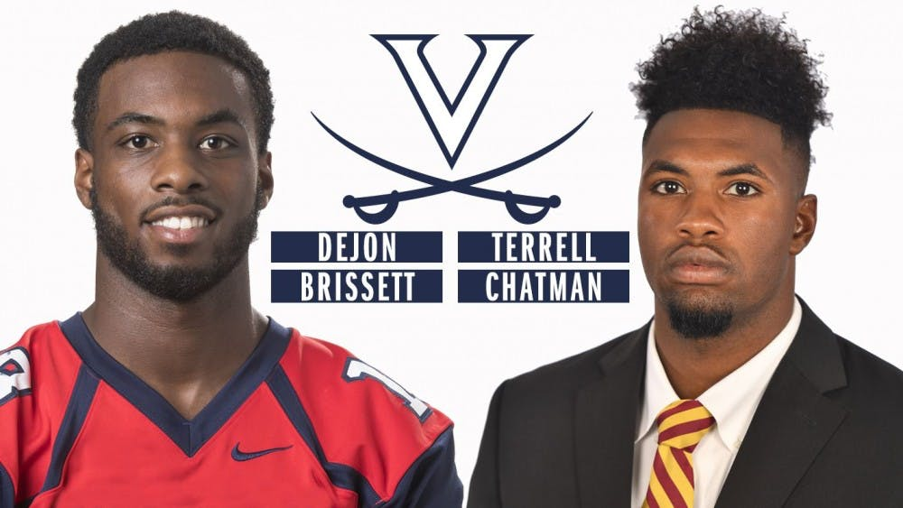

By Chad Whych | 05/03/2019

As the Virginia football team continues to prepare for next season, Coach Bronco Mendenhall announced Tuesday that he is signing two graduate transfers who will immediately play for the Cavaliers in the fall.
Cavalier faithful should familiarize themselves with the following names — Dejon Brissett and Terrell Chatman. The pair are both finishing up their degrees at their respective universities and will be eligible for one season of play at Virginia.
The first acquisition is 6-foot-2, 195-pound wide receiver Brissett. Originally from Mississauga, Ontario, Brissett previously competed for four seasons at the University of Richmond. He was an all-conference wideout in the CAA in 2017 and tallied over 2,300 all-purpose yards and nine total touchdowns during his time at Richmond. Brissett’s 2018 season was cut short at three games due to injury. He now looks for a new beginning where he will hopefully emulate his past successes.
Another wide receiver, Chatman, is the second most recent graduate transfer joining Virginia this summer. Compared to Brissett, Chatman is slightly bigger, measuring in at 6-foot-4 and 195 pounds. He is transferring from Arizona State University, where he played in 13 games for a total of 28 yards and one touchdown. In high school, ESPN ranked Chatman as a top-30 recruit at his position and was also ranked number 245 on the ESPN 300 overall recruit list. Chatman is no new face to senior transfer quarterback Bryce Perkins. Perkins, who was also a transfer from Arizona State, shared a room with Chatman their freshman year. The two players’ past connection may lead to a strong rapport on the field.
The Cavaliers have lost a lot of offensive talent to both graduation and the NFL. This includes names like former Virginia wide receiver Olamide Zaccheaus, former Virginia running back Jordan Ellis and former Virginia tight end Evan Butts. The addition of Brissett and Chatman clearly provides much-needed depth to Virginia’s wide receiver group. Only time will tell if the two graduate transfers will help bolster the Cavaliers’ offense.
Brissett and Chatman join former Penn State offensive lineman Alex Gellerstedt in the 2019 season as graduate transfers.